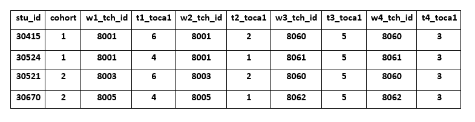
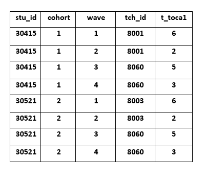
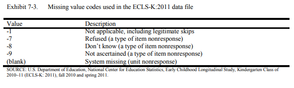

You can view slides from this talk: In Progress.
A style guide is such an integral piece to data management, I am giving it its own section! We will cover best practices for file structures, file naming and versioning, variable naming, and value coding. Whatever rules you put in place, make sure they are written down, stored somewhere that is accessible to the entire team (for example a team wiki or a README) and that all staff are trained to follow the style guide protocols.
As I mentioned in training 2, how you set up your directory structure is based on your preferences. However, it is important to get that structure written out in a style guide so that everyone is following the same rules within and across projects.
Useful guidelines for setting up directory structure include:
_ or - to separate words within the same piece of metadataAn example style guide for your directory structure might look like this:
- to separate wordsHere is an example of a directory structure that would be created based on that style guide:
levelName
1 project-new
2 ¦--README_style-guide.txt
3 ¦--intervention
4 ¦ °--cohort-1
5 ¦ °--coaching_materials
6 ¦ ¦--README_versioning.txt
7 ¦ ¦--c1_coaching_obs-form_v02.docx
8 ¦ °--archive
9 ¦ °--c1_coaching_obs-form_v01.docx
10 ¦--project-mgmt
11 ¦ °--cohort-1
12 ¦ °--scheduling-materials
13 ¦ ¦--README_versioning.txt
14 ¦ ¦--c1_data-collection-sched_v01.xlsx
15 ¦ °--archive
16 ¦--documentation
17 ¦ ¦--data-dictionary
18 ¦ ¦ ¦--README_versioning.txt
19 ¦ ¦ ¦--project-new_data-dictionary_v05.xlsx
20 ¦ ¦ °--archive
21 ¦ ¦ °--project-new_data-dictionary_v04.xlsx
22 ¦ ¦--codebook
23 ¦ ¦ ¦--README_versioning.txt
24 ¦ ¦ ¦--project-new_codebook_v02.pdf
25 ¦ ¦ °--archive
26 ¦ ¦ °--project-new_codebook_v01.pdf
27 ¦ °--cohort-1
28 ¦ ¦--student_measures
29 ¦ ¦ ¦--README_versioning.txt
30 ¦ ¦ ¦--c1_stu_svy_v01.docx
31 ¦ ¦ °--archive
32 ¦ °--teacher_measures
33 ¦ ¦--README_versioning.txt
34 ¦ ¦--c1_tch_svy_v02.docx
35 ¦ °--archive
36 ¦ °--c1_tch_svy_v01.docx
37 ¦--data
38 ¦ °--cohort-1
39 ¦ ¦--raw
40 ¦ ¦ ¦--README_versioning.txt
41 ¦ ¦ ¦--c1_stu_svy_download_2020-11-05.csv
42 ¦ ¦ °--archive
43 ¦ ¦ °--c1_stu_svy_download_2020-11-01.csv
44 ¦ ¦--syntax
45 ¦ ¦ ¦--README_versioning.txt
46 ¦ ¦ ¦--00_setup.md
47 ¦ ¦ ¦--01_c1_stu_svy_cleaning_v01.R
48 ¦ ¦ ¦--02_c1_stu_svy_descriptives_v01.R
49 ¦ ¦ °--archive
50 ¦ °--clean
51 ¦ ¦--README_versioning.txt
52 ¦ ¦--c1_stu_svy_clean_v01.csv
53 ¦ °--archive
54 °--tracking
55 °--year-1
56 ¦--tracking-database
57 ¦ ¦--README_versioning.txt
58 ¦ ¦--c1_tracking_v01.sqlite
59 ¦ °--archive
60 °--parent_consents
61 ¦--c1_parent_consents_compiled_2020-10-14.pdf
62 °--archive Quick thought: Versioning Documents
Some sort of versioning is absolutely necessary to track changes in your documents throughout the life cycle of your project. If you use software that has versioning (ex: Git, Sharepoint, Box), which I highly recommend, then you do not need to add the versioning README files to your folders or create archive folders. Through versioning software, you can save over previous versions of files, without having to add an extension such as v01, v02. And when you save over previous versions, the software tracks the date, allows you to comment on the changes made from your previous version, and at any time, you can view previous versions of the document, review comments from those versions and even retrieve previous versions. If, however, your team does not use versioning software, adding extensions to file names and READMEs to file folders is a viable alternative.
A few important pieces of information before moving on:
Resources:
📑 Sofware Carpentry
📑 CESSDA
📑 Helsinki University Library
📑 Teague Henry
📑 BIDS
If you are like me, or most of humanity, you are guilty of naming files something like research report final.docx and research report final-2.docx and research report-2-dan edits.docx. It happens, but as you can see this can makes it very confusing to know any details about what these documents are? What is this research report on? What is the actual final version? When were the edits made on these documents? What are the differences between these documents?
This is why a file naming style guide is so important. It sets the protocol for you and your entire team to use standardized, descriptive, organized and ultimately human and machine-readable file names to remove any future confusion.
General file naming conventions to follow include:
- between metadata and _ within metadata. This not only helps to make the name human readable but also allows your computer to read and search files easier.\ in dates. Format dates in one of two ways (pick one and add it to the style guide):
Example file naming style guide:
- between metadata and _ to separate words within metadata01_c1_stu_svy_cleaning-syntax_2021-01-22.R02_c1_stu_svy_cleaning-syntax_2021-01-21v01.Rs_svy_protocol_2020-10-01.docxc1_t_svy_data_raw_2020-08-03.csvResources:
📑 Stanford Libraries
📑 Washington University in St. Louis Libraries
📑 Caltech Library
📑 Jenny Bryan
📑 Teague Henry
Variable naming protocol should be created early in the project. You will need this protocol in place to start creating your data dictionary.
There are many best practices and considerations around variable naming.
.)In addition to best practices, here are other practices that I’ve noticed others implement. You can pick and choose what works best for your team. Just make sure whatever you choose, you put it in your style guide and follow those guidelines all throughout your project.
Quick thought: Versioning Variables
We’ve discussed keeping tracks of different versions of documents. But what if the wording or response options for an item/variable substantively change during the project, after you have collected data? Make a rule for variable versioning.
If your data is longitudinal, consider time in your variable naming conventions as well.
Depending on how you plan to merge your data, there are two different ways to account for time.
Concatenate time to your variables. You do this if you plan to merge your data across time in wide format. Every participant/case occurs once in your data and all data collected for that participant is in that one row.
Create time variables and add them to your data. You do this if you plan to append your data over time in long format. Every participant/case occurs multiple times in your data, once for each period/wave of data collection.
You do not need to have this decided right at the beginning of your project. You really don’t even need to decide how to account for time until you are ready to start merging data across time. Until then, most likely you will know when each piece of data is collected by how you name that file which should include time.
When it comes time to start merging your data (maybe you need the first year of data merged to analyze for a funding report), then you will need to make some decisions about how you want to merge your data. The great thing is, if you choose one method and then decide you need your data in the other format later on, it is very easy to switch back and forth through restructuring your data in a statistical program like R or Stata. We will cover this more in a later training.
Consider a hypothetical, longitudinal RCT.
You collect data on two cohorts of students and you follow each cohort. Your first cohort of students is recruited in 2018-19 and the second cohort of students is recruited 2020-21. You follow each cohort for 4 waves of data collection. Two waves occur in the fall and spring of the first year, and two waves of data collection occur in the fall and spring of the follow-up year.

📑 The National Center for Education Statistics has a great example of creating time prefixes for variables in their ECLS-K:2011 documentation on page 7-3.

My examples are by no means, the only way to account for time. You really can account for it however it makes sense for your project and team. As I mentioned early, just make sure to document it thoroughly so that future users know how to interpret time in your data. No matter what though, formatting for time variable names also needs to also go into your style guide. So if you decide to concatenate time to your variable names, in your style guide you will need to make a rule about this (ex: always add time as a prefix, always separate time by an underscore, etc.).
Additional reading on variable naming:
📑 IPA: Best Practices
📑 Advanced R
📑 Karl Broman
Quick thought: Add variable naming to documentation
At the end of any project, you will need to add relevant style guide rules to your final documentation (ex: your codebook) so that when you share your data, others know how to interpret your variable names.
Here is an example of how you would explain your variable naming in your documentation if you are merging data in wide format:
All variable names are made up of the following 4 components:
1. measure (s=student survey, t=teacher survey, o=teacher observation)
2. data collection wave (1=fall, 2=winter, 3=spring)
3. variable/scale name
4. variable/scale #
Sample: s2_toca4 = student survey-winter-toca scale-item4
Similar to variable naming, variable value protocol also needs to be documented early on and standardized within and across projects. Here are some conventions to follow:
Example of missing codes used by NCES:

Additional reading on value coding:
📑 Jessica Logan, Ph.D.
📑 Data One
📑 Karl Broman
📑 Research Connections
A style guide can include many other components besides just the four I covered here. For example, in this excellent example of a style guide, created and used by the Harvard Strategic Data Project, they cover folder structure, file naming, and variable naming, as well as rules for commenting code, general coding guidelines and commonly used and accepted abbreviations. You can include anything you want in your style guide that helps you streamline the look, usability, and searchability of your files and data.